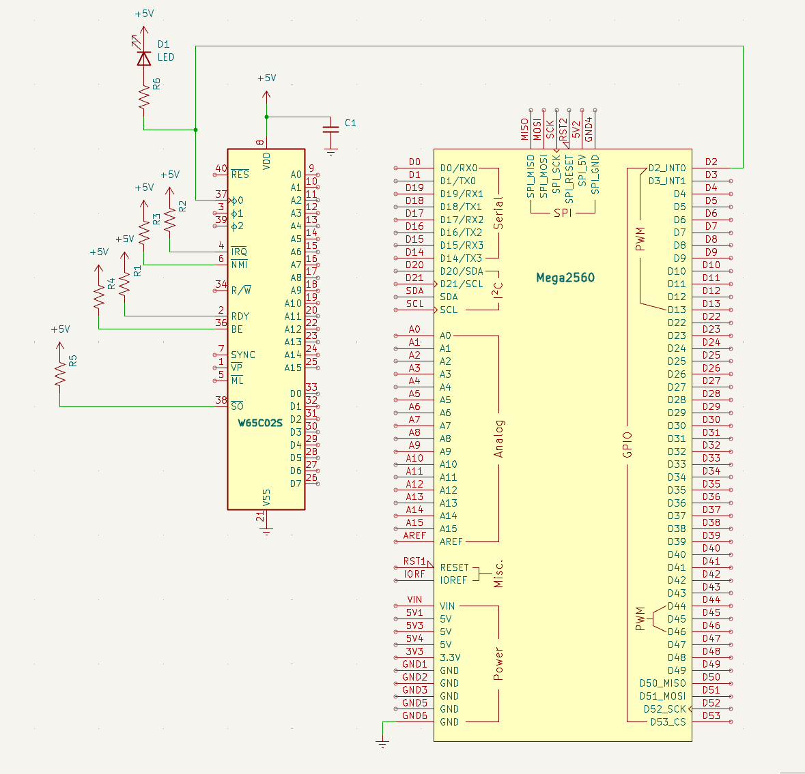

Strömmatning och klocka
Mål
Alla datorer behöver en puls — en hjärtslag som får processorn att ta ett steg i taget. I det här första steget kopplar vi in ström och klocka till W65C02S-processorn. Processorn kommer inte att göra något ännu (vi har varken minne eller program), men vi kan verifiera att den lever.
W65C02S är en statisk CMOS-krets. Det betyder att klockan kan vara hur långsam som helst — till och med stoppas helt — utan att processorn tappar sitt interna tillstånd. Vi utnyttjar detta genom att generera en långsam klockpuls från Arduino och visualisera den med en lysdiod.
En lysdiod och ett motstånd kopplas till klocklinjen. När dioden blinkar vet vi att klockpulsen når fram. Med en multimeter mäter vi också att CPU:n får 5V mellan VDD och VSS.
Det här steget är grunden för allt som kommer — utan ström och klocka gör processorn ingenting.
Komponenter för detta steg
Här är allt som krävs för att väcka CPU:n till liv: processorn själv, en Arduino som genererar klockan, en lysdiod för att se pulsen, samt pull-up-motstånd som håller kontrollsignalerna i tryggt HÖG-läge så att inte processorn startar med spök-avbrott.
| Antal | Komponent | Namn |
|---|---|---|
| 1 | W65C02S (DIP-40) | Processorn |
| 1 | Arduino Mega 2560 | Kontrollenhet |
| 1 | Lysdiod (röd) | D1 |
| 1 | 220 Ω motstånd (klock-LED) | R6 |
| 5 | 10 kΩ motstånd (pull-up: RDY, IRQB, NMIB, SOB) | R1, R2, R3, R4, R5 |
| 1 | 100 nF keramisk kondensator (avkoppling CPU) | C1 |
W65C02S — pinout
DIP-40-kapsel. 16 adresslinjer, 8 datalinjer, 12 kontroll/ström.
■ Adressbuss ■ Databuss ■ Kontroll ■ Ström. Notch/pin 1-markering: uppåt.
Arduino Mega 2560 — anslutningar
Här ser vi alla pinnar på Arduino Mega 2560: A0-A15 och D0-D53
Kopplingsschema
Så här ser den kompletta kopplingen ut när allt ligger på kopplingsdäcket: processorn till vänster, Arduino till höger, lysdiod och pull-up-motstånd på sina platser. Följ strömmen från +5V genom CPU:n till GND, och klockan från Arduino D2 till PHI2.

Kopplingar
Här är varenda koppling i steg 1, pinne för pinne. Kolumnen Varför förklarar vilken signal som färdas längs varje ledning och vad som händer om den saknas. Avkopplingskondensatorn är markerad separat längst ner.
| Pin | Signal | Kopplas till | Varför |
|---|---|---|---|
| 8 | VDD | +5V | Strömmatning — CPU:ns driftspänning |
| 21 | VSS | GND | Systemjord — sluten krets |
| 37 | PHI2 | Arduino D2 | Klockingång — Arduino skickar fyrkantsvåg |
| 2 | RDY | +5V via 10kΩ | Ready — HÖG = CPU får köra. Utan denna stannar CPU:n |
| 4 | /IRQ | +5V via 10kΩ | Interrupt request — HÖG = inget avbrott (vi använder ej avbrott än) |
| 6 | /NMI | +5V via 10kΩ | Non-maskable interrupt — måste vara HÖG, annars kraschar CPU:n |
| 36 | BE | +5V via 10kΩ | Bus Enable — HÖG = bussarna aktiva. Utan denna är CPU:n bortkopplad! |
| 38 | /SO | +5V via 10kΩ | Set Overflow — HÖG = avaktiverad |
| 40 | /RESET | Arduino D4 (senare steg) | Lämnas flytande tills vidare — CPU:n startar själv |
| — | 100nF | Mellan VDD (pin 8) och VSS (pin 21) | Avkopplingskondensator — filtrerar bort brus på strömmatningen. Sätt den så nära CPU:n som möjligt! |
Arduino-kod
Nu ska vi skriva koden som väcker processorn till liv. Det här är första gången vi laddar upp något till Arduino — och det är ett perfekt tillfälle att förstå hur ett Arduino-program är uppbyggt.
Så fungerar ett Arduino-program
Varje Arduino-program består av två funktioner som plattformen anropar automatiskt:
setup()— körs en enda gång när Arduino startar (eller efter reset). Här konfigurerar du pinnar, startar seriekommunikation och initierar allt som behöver vara klart innan programmet börjar loopa.loop()— körs om och om igen i all oändlighet. När Arduinon nått slutet avloop()börjar den om från början — tusentals gånger i sekunden om du inte saktar ner den. Varje varv i loopen är en chans att läsa sensorer, uppdatera utgångar eller — som i vårt fall — generera en klockpuls.
Den här strukturen är genialiskt enkel: setup() förbereder, loop() gör jobbet. Tillsammans räcker de för allt från en blinkande lysdiod till en fullständig minnesemulator.
Kodens arkitektur i detta steg
Koden är uppdelad i tre lager:
- Definitioner och konstanter — längst upp definierar vi pinnar (PHI2,
RESB) och räknar ut klockfrekvensen. Genom att använda namngivna konstanter istället för
magiska siffror blir koden läsbar och lätt att ändra — vill du testa en snabbare klocka ändrar du bara
CLOCK_HZ. - Hjälpfunktionen
pulse()som genererar en komplett klockcykel. Funktionen drar PHI2 HÖG i 500 ms (lysdioden lyser), sedan LÅG i 500 ms (lysdioden släcks). Resultatet är en symmetrisk fyrkantsvåg på 1 Hz — tillräckligt långsamt för att du ska kunna följa med i vad som händer. W65C02S är en statisk CMOS-krets, vilket betyder att den inte har någon minsta klockfrekvens — du kan göra pulserna hur långsamma du vill utan att processorn tappar sitt interna tillstånd. setup()ochloop()— isetup()konfigurerar vi pinnar, håller CPU:n i reset och startar seriekommunikation. Iloop()anropar vi barapulse()— en klockcykel per varv, för alltid.
Vad du ser när koden kör
När du laddat upp koden och öppnar seriemonitor (115200 baud) ser du texten "Steg 1 — Klocka och ström". Lysdioden på klocklinjen blinkar en gång per sekund — den är tänd när PHI2 är hög (CPU:n arbetar) och släckt när PHI2 är låg. Du har just gett processorn dess första hjärtslag.
// ==============================================================
// Steg 1 — strömmatning och klocka
// ==============================================================
// CPU:n får +5V, GND och en långsam klockpuls från Arduino D2.
// En lysdiod på klocklinjen blinkar i takt med pulsen.
// Inga andra anslutningar — adress- och databuss är inte inkopplade.
#include <Arduino.h>
// --- Pindefinitioner ---
#define PHI2 2 // Arduino D2 → CPU pin 37 (klockingång)
#define RESB 4 // Arduino D4 → CPU pin 40 (reset, hålls låg tills vidare)
#define CLOCK_HZ 1 // Klockfrekvens i Hz (1 Hz = synlig blink)
#define CLOCK_DELAY (1000 / (CLOCK_HZ * 2)) // ms per klockfas
// --- pulse() — generera en komplett klockcykel ---
// W65C02S är statisk CMOS — klockan kan vara hur långsam som helst.
// Här: CLOCK_DELAY ms hög + CLOCK_DELAY ms låg = CLOCK_HZ Hz, perfekt för att se lysdioden blinka.
void pulse() {
digitalWrite(PHI2, HIGH); // Stigande flank — CPU:n arbetar (lysdiod lyser)
delay(CLOCK_DELAY); // Halva klockperioden med lysdiod tänd
digitalWrite(PHI2, LOW); // Fallande flank — nästa cykel (lysdiod släckt)
delay(CLOCK_DELAY); // Halva klockperioden med lysdiod släckt
}
// --- setup() — konfigurera pinnar, körs en gång vid start ---
void setup() {
pinMode(PHI2, OUTPUT); // Arduino driver klockan
pinMode(RESB, OUTPUT); // Arduino håller CPU i reset
digitalWrite(RESB, LOW); // CPU i reset — gör ingenting, bussarna tri-state
digitalWrite(PHI2, LOW); // Klockan börjar låg
Serial.begin(115200);
Serial.println("Steg 1 — Klocka och ström");
Serial.println("Lysdioden på PHI2 ska blinka 1 Hz");
}
// --- loop() — repeteras i oändlighet ---
void loop() {
pulse(); // En klockcykel → lysdioden blinkar för alltid
}
Exempel på körning
När du öppnar seriemonitor i Arduino IDE eller PlatformIO (115200 baud) ser du detta:
Seriemonitor (115200 baud)
Steg 1 — Klocka och ström Lysdioden på PHI2 ska blinka 1 Hz
Det är allt! Programmet har inget mer att rapportera — det bara loopar. Men titta på kopplingsdäcket: lysdioden blinkar i precis den takt som pulse() bestämmer. Varje gång dioden tänds är PHI2 hög och processorn tar ett steg framåt. Varje gång den släcks förbereder processorn nästa steg.
Prova att ändra CLOCK_HZ från 1 till 10 och ladda upp igen. Dioden blinkar nu tio gånger per sekund — för snabbt för att urskilja enskilda pulser, men du ser att den lyser svagare eftersom den är släckt halva tiden. Det här är samma princip som senare steg använder när klockan körs i 500 Hz — då syns inte blinkandet alls, men processorn jobbar för fullt.
Om det inte fungerar
Här är några saker att kontrollera:
- Dioden blinkar inte? Kontrollera att du har rätt pinne (D2), att dioden är rättvänd (långa benet till D2 via motstånd, korta till GND), och att motståndet är 220Ω.
- Dioden lyser konstant? Du har förmodligen glömt
delay()eller har en kortslutning. - Spänningen under 4.8V? Använd en 12V DC-adapter i Arduinons barrel-jack. USB-portar ger ofta för låg spänning.
- Glöm inte avkopplingskondensatorn! 100nF keramisk mellan VDD och VSS, så nära CPU:n som möjligt. Utan den kan CPU:n bete sig oberäkneligt.